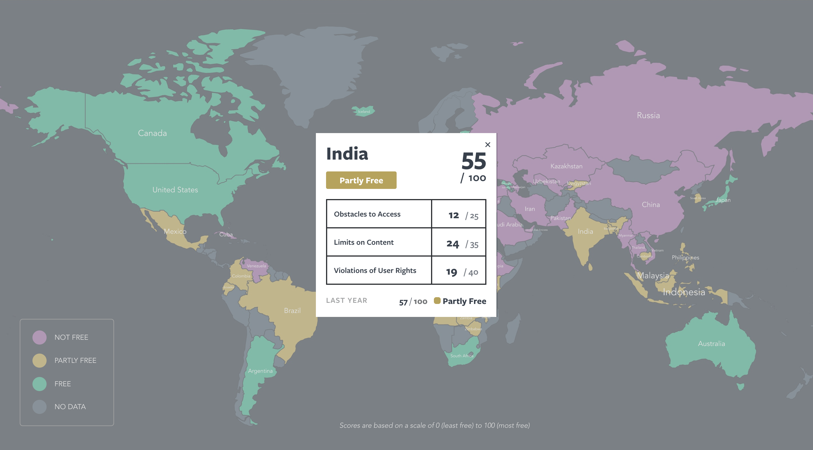

Stella Zhang
Design Comp V2
This is an interactive map that showes the severity of internet censorship around the world based on scores. The scores are put into three categories - free, partly free, and not free. Different categories are reprensented by different colors. When the user clicks on the name of a country, the detailed information about that country's internet freedom will show up in a pop-up window. This second version is less overwhelming, much easier to read, and I eliminated less important information to reduce user cognitive loads.